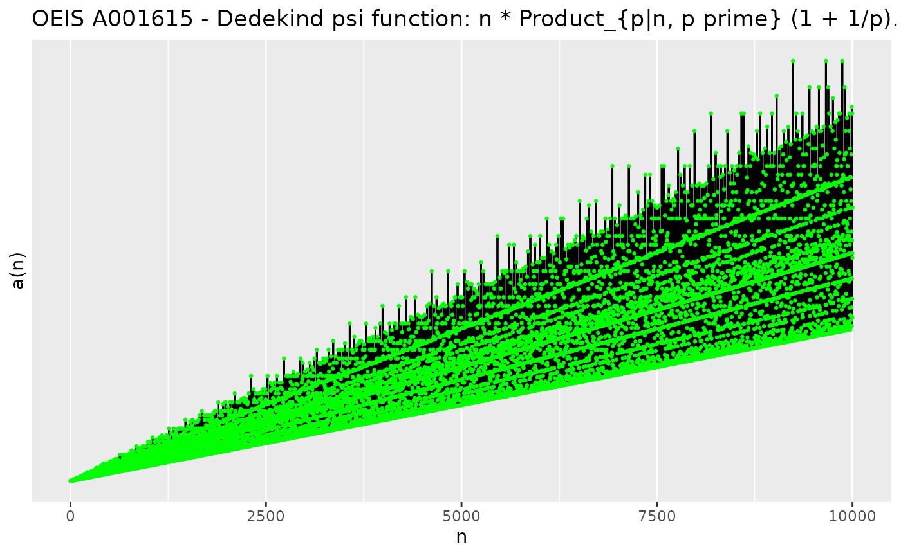

Getting Started with OEIS.R
Enrique Pérez Herrero
2026-11-11
Source:vignettes/OEIS.R-Getting-Started.Rmd
OEIS.R-Getting-Started.RmdIntroduction
The On-Line Encyclopedia of Integer
Sequences (OEIS) is a database of over 390,000 integer sequences,
each documented with a description, formulae, references, links, and
example code in several languages. OEIS.R fetches a
sequence’s entry from oeis.org and parses it into
structured R objects, so it can be explored, cited, and plotted without
leaving R.
Because every function in this vignette talks to
oeis.org directly (there are no bundled fixtures), building
it requires an internet connection, and the output you see reflects the
live state of OEIS at build time. Please respect OEIS’s terms of use and
avoid hammering the server with tight loops over many sequences.
OEIS urls
OEIS_web_url()
#> [1] "https://oeis.org/"
OEIS_web_url(license = TRUE)
#> [1] "https://oeis.org/LICENSE"OEIS_search_url() builds a URL for a free-text search of
the encyclopedia:
OEIS_search_url("Dedekind psi function")
#> [1] "https://oeis.org/search?q=Dedekind+psi+function"Number of sequences in the encyclopedia
OEIS_total_sequences()
#> [1] 401275Fetching a sequence
The OEIS_sequence S3 class
OEIS_sequence() takes an ID (a string of
the form "A" followed by 6 digits) and downloads and parses
the sequence’s full entry:
id <- "A001615"
A001615 <- OEIS_sequence(id)
class(A001615)
#> [1] "OEIS_sequence"
names(A001615)
#> [1] "ID" "url" "description" "formerly"
#> [5] "bfile" "terms" "offset" "comments"
#> [9] "links" "example" "formula" "mathematica"
#> [13] "crossrefs" "keywords" "author" "date"
#> [17] "extensions" "status" "internal_format" "seq_df"
#> [21] "seq_xml"An invalid ID is rejected up front, before any network
request is made:
OEIS_check("hello")
#> Error in `OEIS_check()`:
#> ! "hello" is not an OEIS valid IDBasic sequence information
A001615$ID
#> [1] "A001615"
#> attr(,"class")
#> [1] "OEIS_ID"
A001615$description
#> [1] "Dedekind psi function: n * Product_{p|n, p prime} (1 + 1/p)."
A001615$formerly # old M-/N-number from Sloane's printed catalogs
#> [1] "M2315" "N0915"
A001615$offset
#> [1] "1" "2"
A001615$keywords
#> [1] "nonn" "easy" "core" "nice" "mult"
A001615$status
#> [1] "approved"
A001615$url
#> [1] "https://oeis.org/A001615/"Author and date
A001615$author
#> [1] "N. J. A. Sloane"Not every entry has a parseable trailing date on its author line —
when it doesn’t, $date is NULL rather than a
Date:
A001615$date
#> NULL
A138240 <- OEIS_sequence("A138240")
A138240$date
#> [1] "2008-03-07"Terms
$terms holds the (typically 50-80) leading terms shown
on the sequence’s page:
head(A001615$terms, 15)
#> [1] "1" "3" "4" "6" "6" "12" "8" "12" "12" "18" "12" "24" "14" "24" "24"For longer runs, use the sequence’s b-file, which
OEIS provides separately and which this package downloads via
OEIS_bfile():
A001615$bfile$min_n
#> [1] 1
A001615$bfile$max_n
#> [1] 10000
head(A001615$bfile$data)
#> n A001615
#> 1 1 1
#> 2 2 3
#> 3 3 4
#> 4 4 6
#> 5 5 6
#> 6 6 12Comments, formula, and links
length(A001615$comments)
#> [1] 19
A001615$comments[1]
#> [1] "Number of primitive sublattices of index n in generic 2-dimensional lattice; also index of Gamma0(n) in SL2(Z)."
length(A001615$formula)
#> [1] 20
A001615$formula[1:3]
#> [1] "Dirichlet g.f.: zeta(s) * zeta(s-1) / zeta(2*s). - Michael Somos, May 19 2000"
#> [2] "Multiplicative with a(p^e) = (p+1)*p^(e-1). - David W. Wilson, Aug 01 2001"
#> [3] "a(n) = A003557(n)*A048250(n) = n*A000203(A007947(n))/A007947(n). - Labos Elemer, Dec 04 2001"
library(knitr)
kable(data.frame(link = A001615$links[1:5]))| link |
|---|
| T. D. Noe and N. J. A. Sloane, Table of n, a(n) for n = 1..10000 |
| O. Bordelles and B. Cloitre, An Alternating Sum Involving the Reciprocal of Certain Multiplicative Functions, J. Int. Seq. 16 (2013) #13.6.3. |
| Harriet Fell, Morris Newman, and Edward Ordman, Tables of genera of groups of linear fractional transformations, J. Res. Nat. Bur. Standards Sect. B 67B 1963 61-68. |
| M. Hampejs, N. Holighaus, L. Toth and C. Wiesmeyr, Representing and counting the subgroups of the group Zm X Zn, arXiv:1211.1797 [math.GR], 2012. |
| W. Hürlimann, Dedekind’s arithmetic function and primitive four squares counting functions, Journal of Algebra, Number Theory: Advances and Applications 14:2 (2015), 73-88. |
Cross references
Besides the sequences explicitly referenced in the entry’s
CROSSREFS section ($cf), OEIS also shows the
neighboring sequences in lexicographic order
($seqs_in_context) and by A-number
($seqs_adjacent):
A001615$crossrefs$cf
#> [1] "A000203" "A003050" "A003051" "A054345" "A160889" "A160891" "A002110"
#> [8] "A027748" "A124010" "A019269" "A301594" "A063659" "A082020" "A156303"
#> [15] "A173290" "A175836" "A203444" "A210523" "A000082" "A033196" "A175732"
#> [22] "A291784" "A344695"
A001615$crossrefs$seqs_in_context
#> [1] "A332619" "A397828" "A322319" "A158523" "A133689" "A285895"
A001615$crossrefs$seqs_adjacent
#> [1] "A001612" "A001613" "A001614" "A001616" "A001617" "A001618"Plotting
Base R
plot(A001615)
ggplot2
OEIS_ggplot() plots the full b-file (not just the
leading terms shown above) and returns a normal ggplot
object you can extend:
library(ggplot2)
OEIS_ggplot(A001615) +
geom_line() +
geom_point(size = 0.5, color = "green") +
labs(title = paste("OEIS", id, "-", A001615$description))
Citing a sequence
OEIS_bibtex() builds a citable bibentry for
a sequence, following the citation format suggested by OEIS itself:
bref <- OEIS_bibtex(A001615)
print(bref, style = "Bibtex")
#> @Misc{oeisA001615,
#> author = {N. J. A. Sloane},
#> title = {The {O}n-{L}ine {E}ncyclopedia of {I}nteger {S}equences},
#> note = {A001615: Dedekind psi function: n * Product_{p|n, p prime} (1 + 1/p).},
#> url = {https://oeis.org/A001615/},
#> }
bref$note
#> [1] "A001615: Dedekind psi function: n * Product_{p|n, p prime} (1 + 1/p)."Working from just an ID
Every accessor used above (OEIS_description(),
OEIS_formula(), …) also works directly on a character
ID, without building the full OEIS_sequence
object first — useful when you only need one or two fields and want to
avoid the extra requests OEIS_sequence() makes (crossrefs
and b-file, in particular, each cost a separate request):
OEIS_description(id)
#> [1] "Dedekind psi function: n * Product_{p|n, p prime} (1 + 1/p)."
OEIS_keywords(id)
#> [1] "nonn" "easy" "core" "nice" "mult"Internally, a character ID is validated into an
OEIS_ID object and then, for most fields, converted to the
sequence’s parsed internal format (OEIS’s compact
%-tagged export format). You can inspect that intermediate
object directly:
internal_format <- OEIS_internal_format(id)
class(internal_format)
#> [1] "data.frame" "OEIS_internal"
head(internal_format)
#> tag line
#> 1 ID A001615
#> 2 %I M2315 N0915 #316 Oct 19 2026 09:58:08
#> 3 %S 1,3,4,6,6,12,8,12,12,18,12,24,14,24,24,24,18,36,20,36,32,36,24,48,30,
#> 4 %T 42,36,48,30,72,32,48,48,54,48,72,38,60,56,72,42,96,44,72,72,72,48,96,
#> 5 %U 56,90,72,84,54,108,72,96,80,90,60,144,62,96,96,96,84,144,68,108,96
#> 6 %N Dedekind psi function: n * Product_{p|n, p prime} (1 + 1/p).Session info
sessionInfo()
#> R version 4.6.2 (2026-10-29)
#> Platform: x86_64-pc-linux-gnu
#> Running under: Ubuntu 26.04.1 LTS
#>
#> Matrix products: default
#> BLAS: /usr/lib/x86_64-linux-gnu/openblas-pthread/libblas.so.3
#> LAPACK: /usr/lib/x86_64-linux-gnu/openblas-pthread/libopenblasp-r0.3.32.so; LAPACK version 3.12.0
#>
#> locale:
#> [1] LC_CTYPE=C.UTF-8 LC_NUMERIC=C LC_TIME=C.UTF-8
#> [4] LC_COLLATE=C.UTF-8 LC_MONETARY=C.UTF-8 LC_MESSAGES=C.UTF-8
#> [7] LC_PAPER=C.UTF-8 LC_NAME=C LC_ADDRESS=C
#> [10] LC_TELEPHONE=C LC_MEASUREMENT=C.UTF-8 LC_IDENTIFICATION=C
#>
#> time zone: UTC
#> tzcode source: system (glibc)
#>
#> attached base packages:
#> [1] stats graphics grDevices utils datasets methods base
#>
#> other attached packages:
#> [1] ggplot2_4.0.3 knitr_1.52 OEIS.R_0.2.0
#>
#> loaded via a namespace (and not attached):
#> [1] gtable_0.3.6 jsonlite_2.0.0 compiler_4.6.2 selectr_0.8-0
#> [5] xml2_1.6.0 jquerylib_0.1.4 systemfonts_1.3.2 scales_1.4.0
#> [9] textshaping_1.0.5 yaml_2.3.12 fastmap_1.2.0 R6_2.6.1
#> [13] labeling_0.4.3 generics_0.1.4 curl_8.1.0 desc_1.4.3
#> [17] lubridate_1.9.5 pillar_1.11.1 bslib_0.12.0 RColorBrewer_1.1-3
#> [21] rlang_1.3.0 cachem_1.1.0 xfun_0.62 fs_2.1.0
#> [25] sass_0.4.10 S7_0.2.2 otel_0.3.0 timechange_0.4.0
#> [29] cli_3.6.6 withr_3.0.3 pkgdown_2.2.1 magrittr_2.0.5
#> [33] digest_0.6.39 rvest_1.0.5 grid_4.6.2 lifecycle_1.0.5
#> [37] vctrs_0.7.3 evaluate_1.0.5 glue_1.8.1 farver_2.1.2
#> [41] ragg_1.5.2 rmarkdown_2.32 httr_1.4.9 tools_4.6.2
#> [45] htmltools_0.5.9